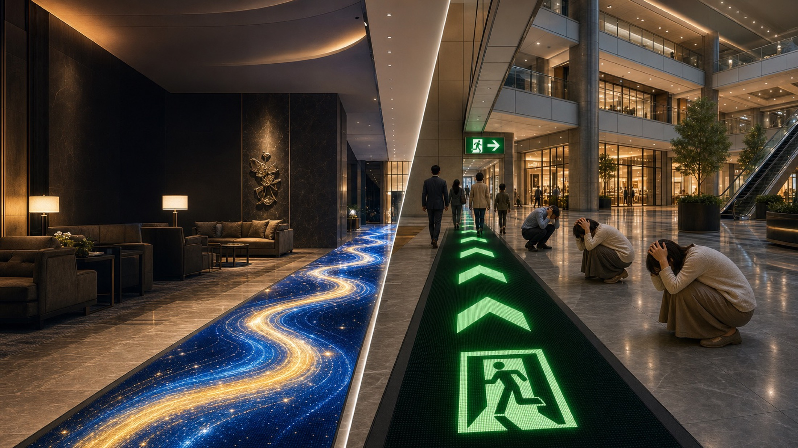
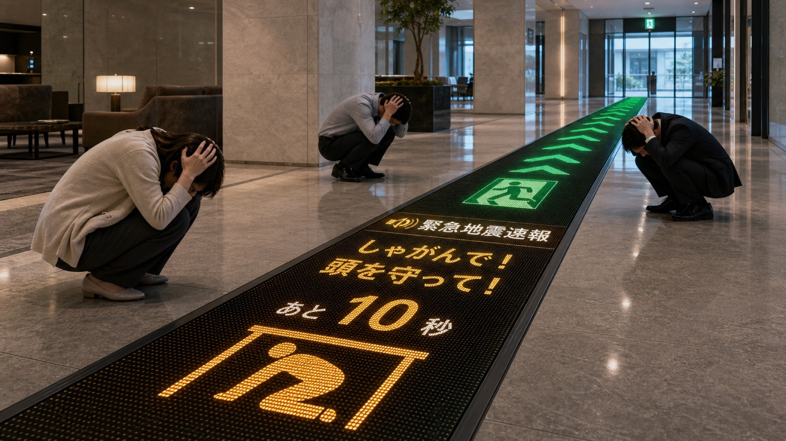
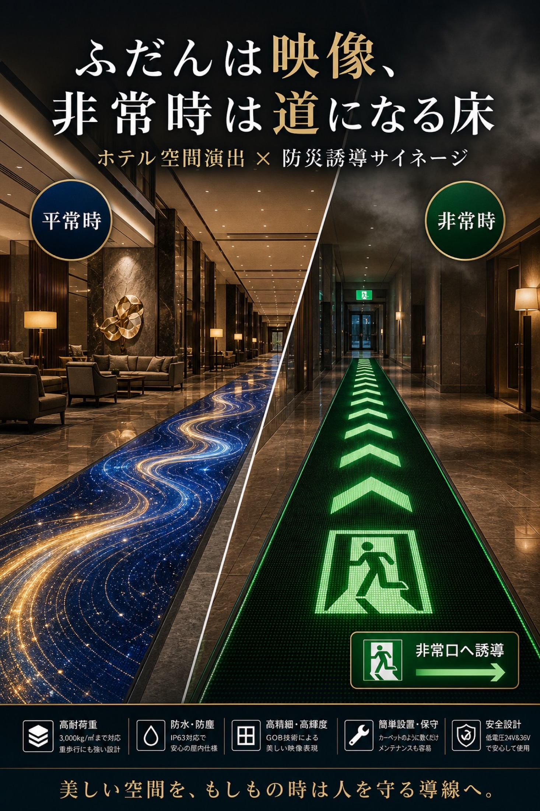
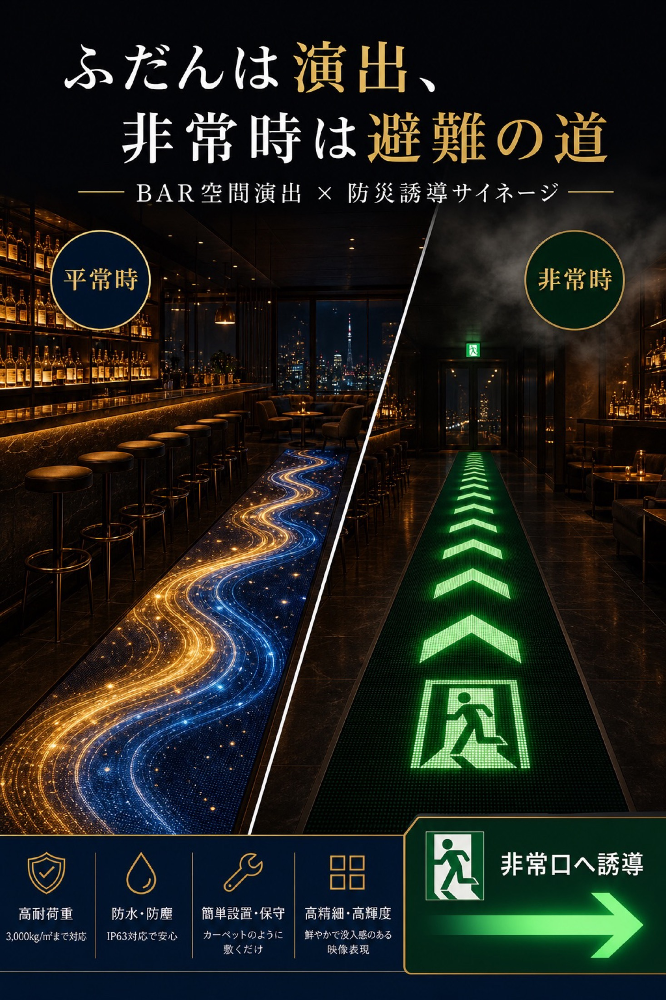
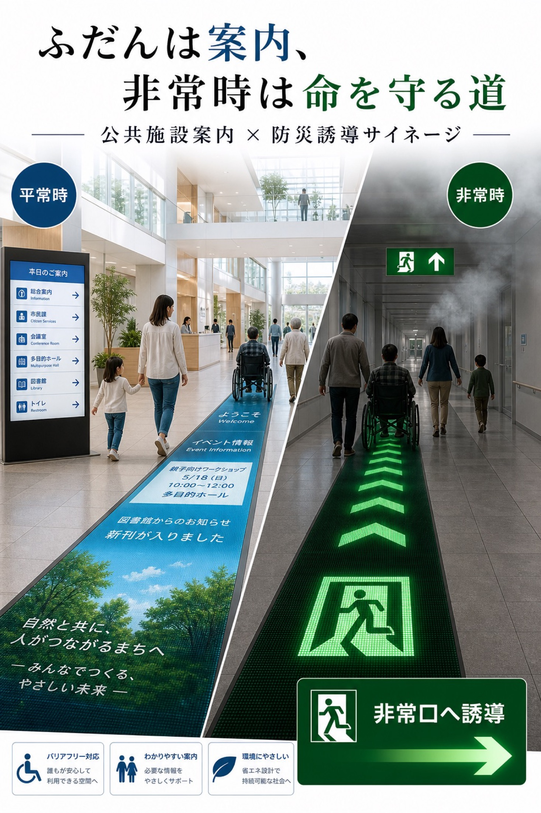
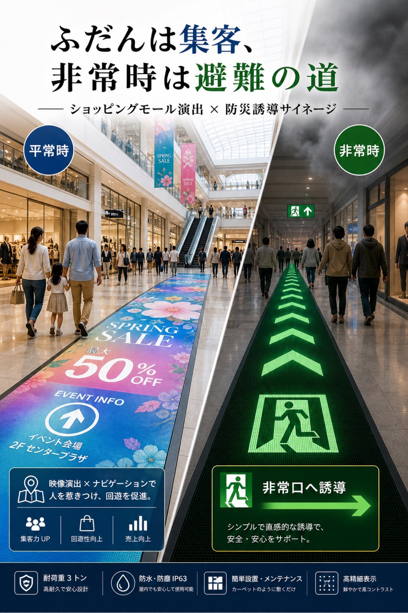
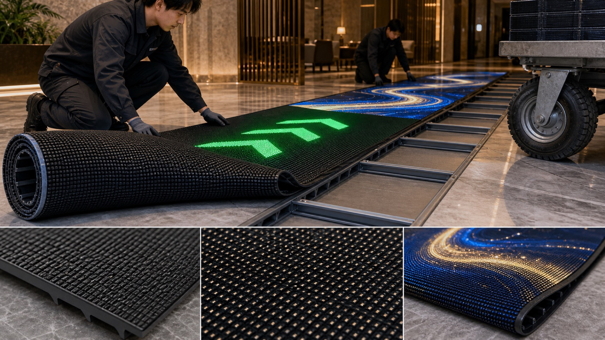

床が上質な映像メディアになる
ロビー、通路、イベント空間に、アート映像や案内、季節演出を流します。

LED Rolling Floor Emergency Signage
ホテル、商業施設、BAR、公共施設の床そのものを、空間演出と防災誘導に使う新しいLEDサイネージ提案です。
Concept
平常時はホテルのブランド映像、イベント案内、商業施設の集客演出として使えます。非常時は床面に緑の矢印や非常口アイコンを出し、煙や混乱の中でも直感的に進む方向を示します。
ロビー、通路、イベント空間に、アート映像や案内、季節演出を流します。
非常口へ向かう矢印、進行方向、しゃがむ・頭を守るなどの行動表示へ切り替えます。

Earthquake Alert
館内放送やスマートフォン通知だけでは、瞬間的に何をすればよいか伝わりにくい場面があります。床面に「しゃがんで」「頭を守って」「あと10秒」のような行動を出すことで、視線が下がる避難行動と自然につながります。
気象庁防災情報XMLフォーマットなど、公式防災データを受信して館内表示へつなぐ構成を想定できます。警報・注意報、地震、津波など、施設に必要な情報種別を選び、床面表示の切替条件として設計します。
実運用では、緊急地震速報や防災設備との連動方法、表示条件、停電時の扱いを施設ごとに設計します。
Visible Evacuation Route
火災時は煙が天井側からたまり、床に近い低い位置は比較的見通しがきくとされています。だから、かがんで動く、床を見る、緑の誘導路を追う、という行動に合わせた表示が有効です。
煙は上方へ早く広がるため、天井付近の表示や遠くの壁面表示は見失いやすくなります。
消防機関の避難指導では、煙を吸わないよう低い姿勢で避難することが基本とされています。
床面に矢印と非常口アイコンを出すことで、視線が下がった状態でも進む方向を直感的に伝えます。
資料上はDC24V/36V入力、IP63、低電圧入力、滑り止め・反射防止が示されています。床面に補助誘導を出す設計は、既存の誘導灯を補う提案として説明できます。
停電時にも表示を続けるには、非常電源、UPS、蓄電池、自動切替、漏電・過電流保護、床下配線の保護、アクリルカバーの防火・耐熱・滑り性能を施設ごとに確認します。
Use Scenes
防災設備としてだけではなく、日常的に見られる床メディアとして導入理由を作れます。

ロビーや宴会場前で、上質な演出と避難誘導を両立します。

暗い空間でも床面の動きで出口方向を示しやすくなります。

案内表示、バリアフリー動線、災害時の行動表示を統合します。

通常は集客と案内、非常時は来館者を出口へ誘導する動線になります。

Product
資料記載の仕様をもとに、床面演出と避難誘導に使いやすい特徴を整理しています。最終仕様は設置場所、下地、電源、防災設備との連携条件に合わせて確認します。
System Flow
施設ごとの日常映像を制作し、非常時はシンプルな誘導表示へ切り替える。映像制作と防災設備の間にある新しい提案領域です。
ホテル、BAR、商業施設に合わせた映像演出や案内表示を作ります。
非常口、階段、待機位置、しゃがむ行動などを施設動線に合わせます。
気象庁防災情報XMLや防災設備、館内放送、管理画面との連携可否を整理します。
法令上必要な誘導灯や非常照明を残したまま、床面誘導を追加します。
Important
本提案は、消防法令上必要な誘導灯・誘導標識・非常照明を置き換えるものではありません。既存設備に追加する補助誘導として、所轄消防署、設計者、防災設備会社と確認しながら導入します。
Evidence
Contact
ホテル、商業施設、公共施設、映像制作会社との共同提案に向けて、設置場所と想定シーンから導入プランを整理します。